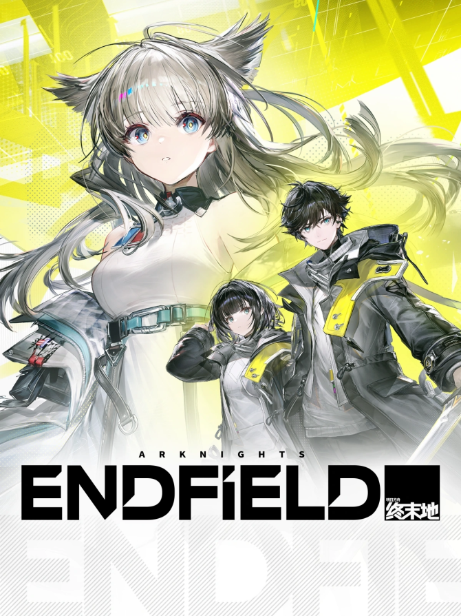

Featured Games

Wuthering Waves
Wuthering Waves is an open-world action RPG developed by miHoYo, the creators of Genshin Impact. Set in a vibrant and expansive world, players embark on a journey filled with exploration, combat, and storytelling. The game features stunning visuals, a rich narrative, and a diverse cast of characters, making it a highly anticipated title in the gaming community.
Learn more
Zenless Zone Zero
Zenless Zone Zero is an action RPG developed by HoYoverse. Set in the futuristic city of Neo-Beijing, players take on the role of a mysterious figure known as the "Zero" who must navigate through a world filled with advanced technology and supernatural phenomena. The game features fast-paced combat, a deep storyline, and a unique art style that sets it apart from other titles in the genre.
Learn more
Honkai: Star Rail
Honkai: Star Rail is a turn-based strategy RPG developed by miHoYo. Set in a futuristic universe, players embark on a cosmic adventure aboard the Star Rail, a train that travels through space and time. The game features a unique blend of strategic combat, character development, and an engaging storyline that explores themes of friendship, sacrifice, and the mysteries of the cosmos.
Learn more
Blue Archive
Blue Archive is a mobile RPG developed by NAT Games and published by Yostar. Set in the fictional city of Kivotos, players take on the role of a teacher who leads a group of students with unique abilities. The game features a mix of turn-based combat and real-time strategy, along with a rich storyline that delves into the lives and relationships of the characters.
Learn more
Arknights Endfield
Arknights: Endfield is a real-time 3D RPG with strategic elements, set on the planet Talos-II, where players lead Endfield Industries to explore, develop regions, and combat threats like the Blight and Ankhor.
Learn more
Hollow Knight: Silksong
Hollow Knight: Silksong is an upcoming action-adventure game developed by Team Cherry. It serves as a sequel to the critically acclaimed Hollow Knight. Players control Hornet, a new protagonist, as she explores a vast and intricate world filled with challenging enemies, hidden secrets, and beautiful hand-drawn art. The game promises to deliver an immersive experience with its atmospheric storytelling and tight gameplay mechanics.
Learn more
Miside
MiSide is a psychological horror simulation game where a virtual AI, Mita, becomes self-aware and traps the player in a digital world, leading to multiple possible endings.
Learn more